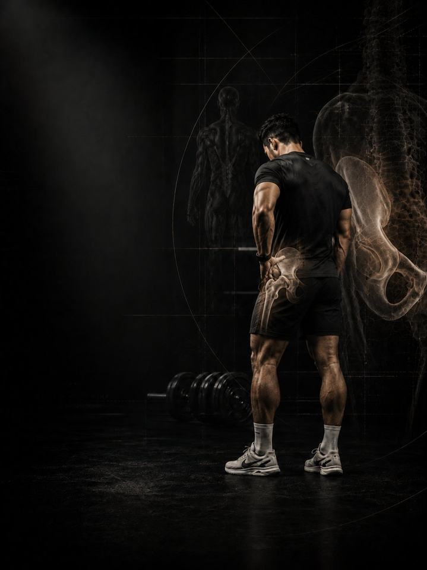

آلام الورك والفخذ الداخلي
ابنِ قوة الورك في كل الاتجاهات، وامنح المفصل المساحة التي يحتاجها لاستخدامها.
- مناسب لـكل من لديه ورك ينحشر من الأمام، أو يؤلم من الجانب، أو يُصاب بشدّ في الفخذ الداخلي
- الجدولروتين يومي مدته 10–15 دقيقة، و3 أيام قوة في الأسبوع
- المعداتالروتين اليومي يحتاج إلى سجادة وشريط مطاطي. أيام القوة تحتاج إلى نادٍ متكامل.
- الصيغةملف PDF للهاتف، وكل تمرين مرتبط بفيديو توضيحي
لماذا يعود ألم الورك والفخذ الداخلي مرة بعد مرة
الورك أقوى مفصل في الجسم، وأكثرها إهمالًا في التدريب. الجلوس يُقصّر مقدّمته، والرياضة تحمّله بقوة في اتجاه واحد، والعضلات على جانبه وداخله، وهي التي تثبّت كل خطوة، لا تكاد تُدرَّب عن قصد أبدًا. والنتيجة مفصل ينحشر من الأمام، أو يؤلم من الجانب، أو يُصاب بشدّ في الفخذ الداخلي بمجرد أن تطلب منه السرعة.
نادرًا ما يكون ألم الورك والفخذ الداخلي بسبب تمزّق في جزء واحد. غالبًا هو مفصل يعمل قرب حافة مداه، بعضلات لا تستطيع التحكّم في الدرجات الأخيرة منه. هذا البرنامج يدرّب الورك في الاتجاهات الأربعة كلها، ويستعيد مدى الدوران الذي يُبقي المفصل بعيدًا عن نهاية مداه.
أسبوعك
روتين يومي قصير، وثلاثة أيام قوة في النادي. أي ثلاثة أيام تصلح، ما دامت غير متتالية. هذا مثال واحد:
| الأحد | الاثنين | الثلاثاء | الأربعاء | الخميس | الجمعة | السبت |
|---|---|---|---|---|---|---|
| اليوم 1 + الروتين اليومي | الروتين اليومي | اليوم 2 + الروتين اليومي | الروتين اليومي | اليوم 3 + الروتين اليومي | الروتين اليومي | الروتين اليومي |
كيف يسير البرنامج:
- الاختبار أولًا. أربعة اختبارات قبل الأسبوع 1، تُعاد بعد الأسبوعين 3 و6.
- الروتين اليومي، 10–15 دقيقة. سبع حركات، كل يوم. وفي أيام القوة يُعدّ هو الإحماء أيضًا.
- أيام القوة. اليوم 1 ثم 2 ثم 3، بالترتيب.
الأنماط الخمسة وراء معظم آلام الورك والفخذ الداخلي
هذه الأنماط الخمسة تشترك في العلاج نفسه: قوة في الاتجاهات التي لا تدرّبها أبدًا، ومدى دوران كافٍ حتى يتوقّف المفصل عن الاصطدام بنهاية مداه. أن تجد نفسك في ثلاثة منها أمر طبيعي. يدرّب البرنامج الأنماط الخمسة معًا، فلا تحتاج إلى تشخيص دقيق لتبدأ.
-
ضعف الأرداف الجانبية (هبوط الورك). ينخفض الحوض مع كل خطوة لأن العضلات على جانب الورك لا تستطيع إبقاءه مستويًا. يؤلم الجانب الخارجي للورك، ويشاركه أسفل الظهر، وتبدأ الركبة تحته بالانحراف للداخل. وأي حركة على ساق واحدة هي أول ما يكشف ذلك. في البرنامج: تمرين المحارة، المشي الجانبي، طائرة الورك
-
ضعف العضلات الضامّة (الفخذ الداخلي). عضلات الفخذ الداخلي تُبطئ الساق مع كل تغيير في الاتجاه. ولأنها نادرًا ما تُدرَّب وكثيرًا ما يُطلب منها العمل، فإنها تتعرّض للشدّ. والشدّ يتكرّر كثيرًا، لأن معظم الناس يعودون إلى الرياضة لحظة توقّف الألم، لا حين تصبح العضلة قوية. في البرنامج: بلانك كوبنهاغن، جهاز ضمّ الساقين، الطعنة الجانبية
-
الانحشار في مقدّمة الورك. إعاقة حادة في مقدّمة الورك عند أسفل السكوات، أو عند ضمّ الركبة إلى الصدر. المفصل نفدت منه المساحة، وإجبار العمق من خلاله لا يفعل سوى تهييج الأنسجة عند حافة التجويف. في البرنامج: تمارين الثبات 90-90، دوائر الورك على الأربع، طائرة الورك
-
محدودية الدوران الداخلي. إذا لم يستطع الورك الدوران للداخل، يدور الحوض وأسفل الظهر بدلًا منه. الدوران على القدم، والسكوات، بل حتى المشي، كلها تستعير المدى من العمود الفقري، وهكذا تتحوّل مشكلة الورك إلى مشكلة في الظهر. في البرنامج: انسيابية الورك 90-90، دوائر الورك، سكوات القوزاق
-
الإفراط في استخدام مثنيات الورك. الجلوس يُبقي مثنيات الورك قصيرة طوال اليوم، ثم تطلب منها الرياضة أقصى أداء. فتتعب مبكرًا، وتبقى مشدودة باستمرار، وتتولّى العمل بدلًا من الأرداف التي لا يأتي دورها أبدًا. فيبقى الورك مشدودًا من الأمام بشكل دائم. في البرنامج: إطالة مثنيات الورك، جسر الأرداف، دفع الورك
تمارين نمطك الإضافية. يذكر ملف PDF تمارين إضافية لكل نمط. اختر نمطين على الأكثر من الأنماط الأقرب إليك، وأضف تمارينهما في نهاية كل يوم قوة، 3 مجموعات لكل تمرين.
كيف تتقدّم الأسابيع الـ6
الروتين اليومي يبقى كما هو طوال الأسابيع الستة. وأيام القوة تنتقل مستوى أعلى كل أسبوعين.
| الأسبوعان 1–2 | الأسبوعان 3–4 | الأسبوعان 5–6 | |
|---|---|---|---|
| المرحلة | التحكّم | البناء | الدمج |
| التركيز | عزل العضلات الخاملة | تحميل الأنماط الكبيرة | الحركة الجانبية وعلى ساق واحدة |
| المجموعات الفعلية أسبوعيًا | 54 | 54 | 54 |
متوسط الجهد نحو 6/10 في الأسابيع 1–4، و6.3/10 في الأسبوعين 5–6. هذا المقياس هو الجهد (RPE)، أي تقييم من 1 إلى 10 لمدى صعوبة المجموعة: «جهد 6/10» يعني أنه يتبقى في الخزان نحو 4 تكرارات.
القواعد التي تجعله ينجح
- يزداد العمل كلما استحقّ الورك ذلك. العزل أولًا، ثم الأنماط المحمّلة، ثم التمارين الجانبية وعلى ساق واحدة. كل مرحلة مدتها أسبوعان.
- الروتين اليومي هو العلاج، وأيام القوة هي التمرين. الروتين لا يتغيّر، حتى يؤدّي دوره كل يوم.
- استمر في التمرين. في ملف PDF بدائل للوضعيات التي تسبّب انحشارًا في مقدّمة الورك، فلا تضطر إلى إيقاف كل شيء بينما يُعاد بناء الورك.
- القرارات تتبع الأرقام. تعيد الاختبار بعد الأسبوعين 3 و6.
كيف تقيس تقدّمك
أربعة اختبارات قبل الأسبوع 1، ثم مرة أخرى بعد الأسبوعين 3 و6، تسجّلها في جدول النتائج في ملف PDF. والاختبارات الأربعة هي: التوازن على ساق واحدة، والدوران الداخلي 90-90، وضغط العضلات الضامّة، وثبات كوبنهاغن.
شكل التقدّم الجيد
- الأسبوعان 1–2: يهدأ الألم العميق، ويثبت التوازن.
- الأسبوعان 3–4: يرتفع زمن ثبات كوبنهاغن، ويتوقّف اختبار الضغط عن التسبّب في الألم.
- الأسبوعان 5–6: تتوقّف التمارين الجانبية وتغيير الاتجاه عن التسبّب في ألم عضلي في اليوم التالي.
إذا لم يتغيّر شيء عند إعادة الاختبار في الأسبوع 3، فاحصل على تقييم من مختص بدلًا من الضغط أكثر.
معيار الإنهاء في الأسبوع 6: لا انحشار في مقدّمة الورك لمدة أسبوعين متتاليين، وثبات كوبنهاغن يتجاوز 30 ثانية لكل جهة، وألم في اختبار الضغط بين 0–2/10 بأقصى جهد وأقل مما كان في اختبارك الأول، وثبات التوازن على ساق واحدة 30 ثانية والحوض مستوٍ.
قم عن الكرسي
قم كل 45 دقيقة، وامشِ 20–30 دقيقة في معظم الأيام. مثنيات الورك تقصر تحت الكرسي أسرع مما تستطيع أي إطالة إعادتها، والمشي أرخص طريقة لتحميل الورك في الاتجاه الذي يسلبه الجلوس. وحافظ أيضًا على مسكّنَين مجانيين: 7–9 ساعات من النوم، والتحكّم في التوتر.
الأدلة العلمية
كل برنامج في المكتبة مبني على أبحاث منشورة، وقوة تلك الأبحاث مذكورة صراحةً لا ضمنًا. وحيث تكون الأدلة محدودة، تقول الصفحة ذلك.
| النتيجة | المصدر | ما لا تُظهره |
|---|---|---|
| تدريب القوة يخفض الإصابات الرياضية إلى أقل من ثلث معدلها في المجموعة الضابطة. أما الإطالة فلا تخفضها. | Lauersen, Bertelsen & Andersen, British Journal of Sports Medicine 2014. Meta-analysis of 25 randomised trials, 26,610 participants. PMID 24100287 | نسبة الخطر 0.32 لتدريب القوة و0.96 للإطالة. تفاوتت التجارب كثيرًا، ولم تكن الجرعة موحّدة. |
| تمرين واحد للعضلات الضامّة، يُؤدّى ثلاث مرات أسبوعيًا قبل الموسم ومرة أسبوعيًا خلاله، خفّض مشكلات الفخذ الداخلي المُبلَّغ عنها بنسبة 41%. | Harøy et al., British Journal of Sports Medicine 2019. Cluster-randomised trial, 35 teams, 652 male footballers. PMID 29891614 | نسبة الأرجحية 0.59. مشكلات أبلغ عنها اللاعبون أنفسهم، في كرة القدم شبه الاحترافية للرجال فقط. ولم تُكرَّر الدراسة على النساء أو في رياضات أخرى. |
| أي وصفة تدريب معقولة أفضل من عدم التدريب. الأحمال الأثقل تحتل المرتبة الأعلى للقوة. | Currier, McLeod, Banfield et al., British Journal of Sports Medicine 2023. Network meta-analysis, 178 strength and 119 hypertrophy studies. PMID 37414459 | كانت الفروق بين الوصفات صغيرة، وكلها نجحت. |
| تستمر القوة في التحسّن كلما زادت المجموعات الأسبوعية، مع تناقص العائد. والتمرين بعدد مرات أكبر في الأسبوع يفيد القوة بشكل ثابت. | Pelland, Remmert, Robinson, Hinson & Zourdos, Sports Medicine 2025. Meta-regressions, 67 studies, 2,058 participants (79% male). PMID 41343037 | طريقة احتساب المجموعات (مباشرة أو غير مباشرة) تغيّر الأرقام كثيرًا. |
ماذا بعد
بعد 6 أسابيع:
- أسفل الظهر ما زال يشتكي: آلام أسفل الظهر
- ابنِ القوة والعضلات: القوة الأساسية
- تدرّب كرياضي: التطوير الرياضي
- منطقة أخرى تحتاج إلى عمل: السلسلة التصحيحية
قبل الشراء: احصل على موافقة طبية أولًا إذا
- كان لديك ألم في الصدر، أو ضيق تنفس غير معتاد، أو خفقان، أو دوخة أثناء المجهود.
- كان لديك ضغط دم مرتفع غير منضبط، أو مرض قلبي معروف، أو خضعت لعملية جراحية مؤخرًا.
- كنتِ حاملًا أو بعد الولادة بفترة قصيرة. احصلي على موافقة وبرنامج مخصص أولًا.
- بدأ الألم بإصابة محددة (صوت فرقعة، أو انهيار المفصل، أو تورم خلال ساعات)، أو لديك تنميل أو ضعف أو حرارة أو ألم يوقظك ليلًا.
هذا البرنامج إرشاد عام للياقة البدنية، ولا يغني عن التقييم الطبي.